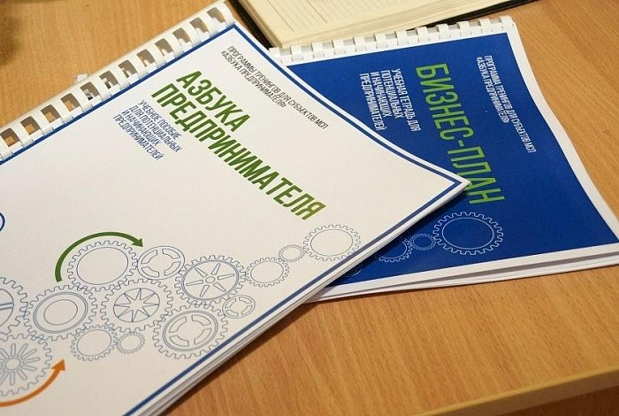

Программа профессиональной переподготовки:
«БУХГАЛТЕРСКИЙ УЧЕТ».
Квалификация 5 (бухгалтер).
(252 часа).
Программа обучения разработана учебным центром Ависта на основании нового ГОСУДАРСТВЕННОГО ПРОФЕССИОНАЛЬНОГО СТАНДАРТА "БУХГАЛТЕР", утверждённого приказом Министерства труда и социальной защиты РФ 22 декабря 2014 г. N 1061н.
Специалистам, имеющим непрофильное образование, необходимо получить дополнительное профессиональное образование - пройти профессиональную переподготовку по профилю деятельности.
По окончании данного курса обучения, выпускник может занимать только должность бухгалтера (квалификация 5), работать же главным бухгалтером (квалификация 6) на основании профстандарта он не имеет права!
Статус программы: профессиональная переподготовка. Программа обучения предназначена для слушателей, не имеющих образования бухгалтера.
Цель и задачи курса: Программа разработана в соответствии с последними изменениями законодательства, актуальной бухгалтерской, налоговой практикой. Курс ориентирован на подготовку квалифицированных специалистов (бухгалтеров) в области бухгалтерского учета и налогообложения для работы в коммерческих структурах различного уровня. В процессе обучения Вы получите высокопрофессиональные знания в области бухгалтерского учета, налогообложения, законодательной базе, экономики. Приобретёте практические навыки учета хозяйственных операций, будете знать и разбираться в системе налогообложения, научитесь методам аналитической обработки учетных данных.
Категория слушателей: лица с любым (непрофильным) высшим или средним профессиональным образованием.
По окончании обучения Вы будете уметь:
При успешном завершении обучения и сдачи итогового экзамена, выдаётся Удостоверение, дающее право ведения нового вида профессиональной деятельности в сфере БУХГАЛТЕРСКОГО УЧЕТА.
Дорогие слушатели, по множественным заявкам предлагаем Вам пройти курс Школы Генетического питания, по окончании есть возможность получить удостоверение о приобретении новой специальности "Консультант Генетического Питания" с которой Вы сможете найти высокооплачиваемую работу в престижных фитнес-центрах, спортивных клубах, и даже детских спортивных центрах.
Информация о нашем организме и том, как правильно его кормить, заложена родителями в генетическом коде и порой Вы увидите совершенно неожиданный результат и поворот в жизни. Благодаря правильному подбору питания можно избежать многие заболевания, облегчить страдания, и даже сориентироваться в выборе профессии!
Обучение занимает 2 полных дня в аудитории и поддержку консультанта в течение месяца после окончания курса. Стоимость 5000 рублей! Запись по телефону +79022689898.
Приглашаем Вас на программу «Азбука предпринимательства» для потенциальных и начинающих предпринимателей по обучению навыкам создания бизнеса с нуля.
Основной задачей программы является обучение потенциальных и начинающих предпринимателей выявлению наиболее приемлемой бизнес-идеи и разработке к ней бизнес-планов с целью содействия дальнейшей реализации разработанного бизнес-проекта.
Программа ориентирована на людей, которые хотят начать свой бизнес или реализовать новый бизнес-проект. В программе подробно описаны шаги, которые необходимо предпринять при создании бизнеса с момента формирования бизнес-идеи до регистрации предприятия. Итогом изучения и освоения программы станет разработанный бизнес-план нового предприятия или запуск нового проекта.
После прохождения обучения по программе и запуска бизнеса предприниматель может пройти обучение по программе «Школа предпринимательства» для действующих предпринимателей по обучению навыкам, нацеленным на развитие бизнеса и совершенствование управления предприятием, а также по улучшению финансовых и производственных показателей бизнеса.
По окончании программы выдаётся сертификат.
Обучение проводит Блинова Виталия Казимировна, профессиональный преподаватель и успешный предприниматель.
Обучение ведется в течение года по мере набора групп.
Чтобы записаться на мероприятие, зарегистрируйтесь (авторизуйтесь) на нашем сайте.

Учебный центр Ависта приглашает на курсы обучения по программам повышения квалификации:
1. Организация нормирования труда на предприятии (36 академ. часов).
2. Организация заработной платы и премирования на предприятии (36 академ. часов).
3. Современные подходы к нормированию труда на предприятии (72 академ. часа).
Программы обучения предназначены для специалистов, не имеющих экономического и бухгалтерского образования, но желающих повысить свою квалификацию в области организации труда и заработной платы на предприятии. Программы разработаны на основе требований и рекомендаций Российского законодательства, и охватывают все необходимые аспекты для работы на предприятиях различных форм собственности.
По окончании обучения слушателям выдаётся Удостоверение о повышении квалификации.
Стоимость обучения: 5000 рублей.
Начало обучения: 15 сентября 2024 года.
Курс бизнес-фотографии предназначен для тех, кто хочет профессионально заняться фотографией и организовать собственный бизнес в этой сфере. Программа включает как теоретическую, так и практическую части. Обучение охватывает:
По окончании курса вы получите сертификат, который позволит вам открыть собственный бизнес или найти работу в этом направлении.
Стоимость курса: 10 000 рублей.
Начало занятий: 1 октября 2024 года.